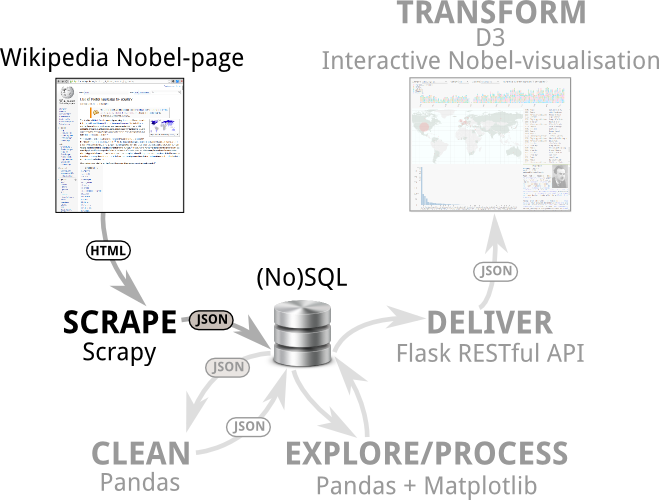
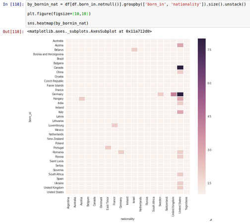

Data-visualisation with Python and Javascript
Crafting a data-visualisation tool-chain for the web
PyData-London 2015
Created by Kyran Dale / @kyran_dale
Got it Covered
Data, bees and stuff
Only When I Laugh
Detecting the pain points
- Lovely Python GUIs lying unused and forgotten
- Inevitable pressure towards data-viz on the web
- Only one web-language and it isn't Python
- If only I could join that web dataviz party...
Data(viz) Domains
Python and Javascript should be a great complement
Bridging the Python-JS Divide
Here be dragons!
Bridging the Python-JS Divide
Here be dragons!
Bridging the Python-JS Divide
A lightweight shim
- Small HTML5 skeleton plus a little CSS
- Javascript Object Notation (JSON) for data-format
- Small Flask RESTful API to deliver the data
- Everything else just programming
- Let's call it a One-page-app!
The Exploration-presentation Axis
Yes, we are all data-visualisers!
The Exploration-presentation Axis
Yes, we are all data-visualisers!

My Amazing New Visualisation
The Web-dev shim
index.html
My Amazing Visualisation
<script src="http://d3js.org/d3.v3.min.js">
<script src="script.js">
My Amazing New Visualisation
It's called programming
// A FEW CONSTS
var NUM_POINTS = 50;
var MAX_THETA = 2*Math.PI;
var DTHETA = MAX_THETA/NUM_POINTS;
var WIDTH=600, HEIGHT=600;
var i=0, data = [];
// ...
for(i=0; i<NUM_POINTS; i++){
var theta = i*DTHETA;
data.push({theta:theta, c: Math.cos(theta), s:Math.sin(theta)});
}
// SET OUR SCALES USING D3
var yScale = d3.scale.linear()
.domain([0, NUM_POINTS])
.range([0, HEIGHT]);
// ...
var dlines = d3.select('#chart').selectAll('data-line').data(data);
// ADD OUR DATA TO THE DOM
dlines = dlines.enter().append('g')
.classed('data-point', true);
dlines.each(function(d, i) {
var s, c, t;
var g = d3.select(this);
s = g.append('text').classed('s', true).text(d.s.toPrecision(3));
c = g.append('text').classed('c', true).text(d.c.toPrecision(3));
t = g.append('text').classed('t', true).text(d.theta.toPrecision(3));
});
// OUR MAIN UPDATE FUNCTION
kcharts.update = function(updateType) {
dlines.each(function(d,i){
var tr, tx, ty, cx, cy, sx, sy;
var g = d3.select(this);
switch(updateType){
case 'ordered':
// ...
case 'orig':
// ...
case 'alt': // USING D3 SCALES TO CREATE SIN+COSINE WAVES
tr = -45; tx = xThetaScale(d.theta); ty = HEIGHT+20;
cx = xThetaScale(d.theta); cy = yThetaScale(d.c);
sx = xThetaScale(d.theta); sy = yThetaScale(d.s);
break;
}
// ... APPLY TRANSITIONS
g.select('.t')
.transition().duration(3000)
.attr('transform', 'translate(' + tx + ',' + ty + ') rotate(' + tr + ')');
// ...
});
};
// ADD CONTROLS
d3.select('#control-buttons').selectAll('buttons')
.data(['ordered', 'orig', 'alt']).enter()
.append('button').text(function(d) {
return d;
})
.on('click', function(d) {
kcharts.update(d);
});
// SET DEFAULT
kcharts.update('ordered');The Joys of D3
Beyond the barchart
- Implementation of Wilkinson's 'Grammar of Graphics' (cf. ggplot2)
- Solid theoretical core makes it incredibly powerful and expressive
- It flows where other libraries tend to lock-up
- Perhaps the greatest genius of Mike Bostock was implementing it in Javascript (then considered a 'toy' language)
- Not a charting library but the library you make charting libraries with
- New forms of data-visualisation waiting to be discovered
The Dataviz Toolchain
Scraping Data with Scrapy
Scraping Data with Scrapy
Identify the targets
Scraping Data with Scrapy
Send in the spider
Scraping Data with Scrapy
Results
- Nice array of JSON objects
- But data probably dirty
- Need to identify and remove anomalies such as duplicates, missing fields, formatting-errors etc..
- Time for Pandas...
Cleaning Data with Pandas

Cleaning Data with Pandas
Load scraped JSON-array into a DataFrame
[
{
"category": "Physics",
"name": "Albert Einstein",
"gender": "male",
"place_of_birth": "Ulm , Baden-W\u00fcrttemberg ,German Empire",
"date_of_death": "1955-04-18",
...
},
...
]
import pandas as pd
df = pd.read_json(open('data/nobel_winners.json'))
Cleaning Data with Pandas
Missing Fields
df.info
<class 'pandas.core.frame.DataFrame'>
Float64Index: 1052 entries, 0.0 to 999.0
Data columns (total 12 columns):
born_in 1052 non-null object
category 1052 non-null object
date_of_birth 1044 non-null object
date_of_death 1044 non-null object
gender 1041 non-null object
link 1052 non-null object
name 1052 non-null object
nationality 1052 non-null object
place_of_birth 1044 non-null object
place_of_death 1044 non-null object
text 1052 non-null object
year 1052 non-null int64
dtypes: int64(1), object(11)
memory usage: 106.8 KBCleaning Data with Pandas
First pass filter, showing duplicates and missing data
In: df.describe(include=['object'])
Out:
born_in category date_of_birth date_of_death gender \
count 1052 1052 1044 1044 1041
unique 40 7 853 563 2
top Physio.. 9 May 1947 male
freq 910 250 4 362 983
link name \
count 1052 1052
unique 893 998
top http://eg/wiki/... Daniel Kahneman
freq 4 2
nationality place_of_birth place_of_death \
count 1052 1044 1044
unique 59 735 410
top United States
freq 350 29 409
...
Cleaning Data with Pandas
Removing duplicates without prejudice
# shuffle the Dataframe's index to remove alphabetical order
df = df.reindex(np.random.permutation(df.index))
# drop all duplicates sharing 'name' and 'year'
df = df.drop_duplicates(['name', 'year'])
# sort index to restore original row-order
df = df.sort_index()
Cleaning Data with Pandas
Missing fields easily located
df[df.category.isnull()][['name', 'text']]
# Out:
# name text
# 922 Alexis Carrel Alexis Carrel , Medicine, 1912
Cleaning Data with Pandas
Dodgy date detection
Cleaning Data with Pandas
The worst stains removed
In: df.count()
Out:
category 858
date_of_birth 858
date_of_death 566
gender 858
link 858
name 858
nationality 858
place_of_birth 831
place_of_death 524
text 858
year 858
dtype: int64
Exploring Data with Pandas
Exploring Data with Pandas
Questioning your dataset
Whatever your motivation for the data-visualisation, you're ultimately looking for interesting stories to tell. The point of the visualisation is to impress these narratives upon the hominid visual cortex as effectively as possible.Pandas is a great tool for exploring your data, finding the patterns and trends of interest, the nuggets that will inform your dataviz creation.
Exploring Data with Pandas
Absolute prize-number by country

Exploring Data with Pandas
Regional trends
Exploring Data with Pandas
Gender disparities
Exploring Data with Pandas
Age of winners with Seaborn's distplot
Exploring Data with Pandas
Life expectancy of winners

Exploring Data with Pandas
Increasing longevity
Exploring Data with Pandas
The Nobel diaspora
Imagining a Visualisation
Delivering Data with Flask
RESTful Data with Flask
Rolling an API with Eve and MongDB
A Language Bridge Cheatsheet
A Language Bridge
Functional fiddling
Shifting Bits
JS smokes Python for speed
Transforming Data with D3
A Small HTML Backbone
<link rel="stylesheet" href="style.css" type="" media="screen" />
<body>
Selected winners
Year Category Name
Fleshing the Skeleton
D3 and Javascript
<script src="//code.jquery.com/jquery-1.11.0.min.js">
<script src="http://d3js.org/d3.v3.min.js">
<script src="http://d3js.org/topojson.v1.min.js">
<script src="http://d3js.org/queue.v1.min.js">
<script src="http://cdnjs.cloudflare.com/ajax/libs/lodash.js/2.4.1/lodash.min.js">
<script src="lib/crossfilter.min.js">
<script src="script_core.js" >
<script src="script_ui.js" >
<script src="script_map.js">
<script src="script_bar.js">
<script src="script_time.js">
<script src="script_details.js">
<script src="script.js">
Summary
- Mediated by JSON, Python and Javascript are a great data-viz complement.
- Very little 'web-dev' needed to start programming web-visualisations.
- Exciting times - with powerful libraries like D3, a fast JS, getting faster, and approx. 100% device penetration, novel data-viz beckons.
- So calling the new visualisation pioneers to follow in Minard's footsteps.
- There will be tweets: @kyran_dale
- And a mailing-list: http://kyrandale.com/blog/data-visualization-python-javascript/